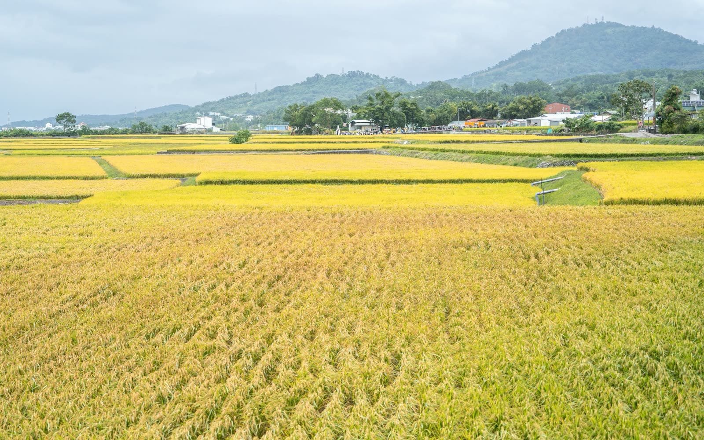
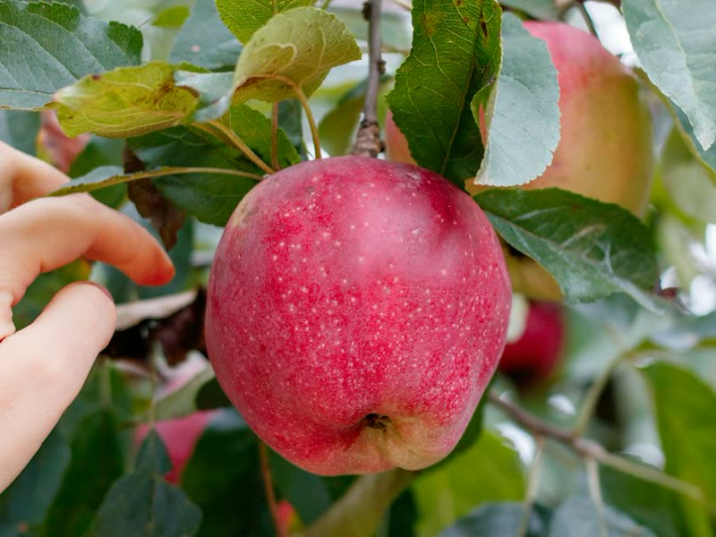
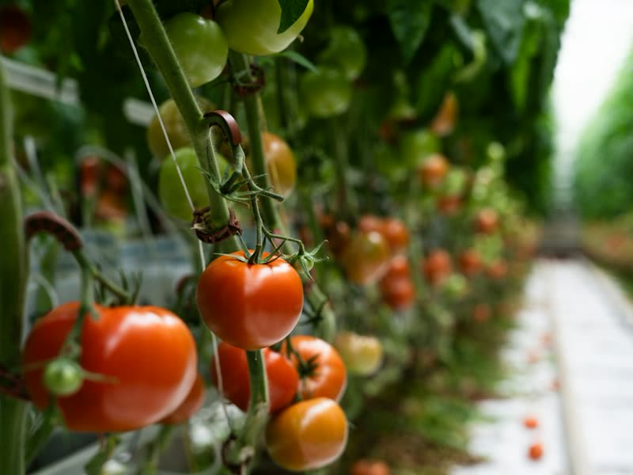
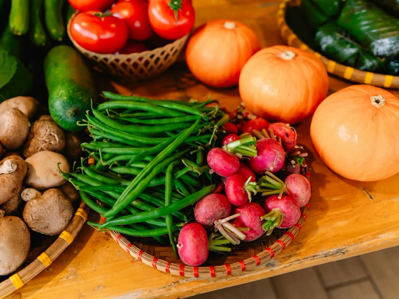
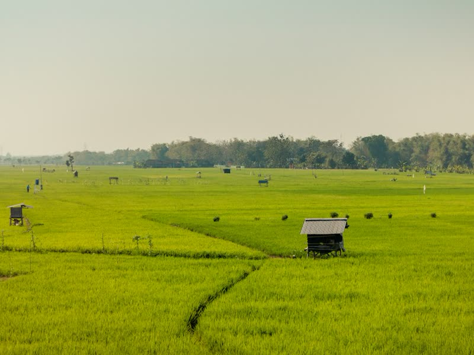

여섯 장면
아래로 내려 보세요 ↓
이렇게 한 달을 삽니다
군이 준비한 것
집과 살림살이, 일거리를 미리 마련해 둡니다. 금액과 인원은 예시입니다.
30일
머무는 기간
10월 한 달. 가족이나 친구와 함께 지내도 됩니다.
12가구
모집 규모
마을 세 곳에 네 가구씩 나눠 머뭅니다.
30만 원
활동비
일손 돕기와 마을 활동에 참여하면 드립니다.
0원
집세
군이 고쳐 둔 빈집을 무상으로 빌려 드립니다.
어느 화요일
논두렁 산책
이슬이 마르기 전에 마을을 한 바퀴 돕니다
하우스 일손 돕기
토마토를 따고 상자에 담습니다
마을회관 점심
어르신들과 한 상에 둘러앉습니다
텃밭 가꾸기
내 몫의 두 이랑에 모종을 심습니다
평상에서 저녁
그날 딴 것으로 차려 먹습니다
만 19세 이상이면 누구나 신청할 수 있습니다. 농사 경험은 묻지 않습니다. 자격과 일정은 예시입니다.
신청서 내기
10월 2일까지
전화 면담
10월 둘째 주
마을 배정
10월 셋째 주
입주
10월 넷째 주
빈집에 불을 켜 두겠습니다
문의 ○○군 농촌활력과 02-000-0000 · 평일 9시 ~ 18시